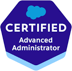

About Me
Dynamic Salesforce Administrator and Business Analyst with over 5 years of end-to-end implementation and consulting experience across Sales Cloud and Service Cloud. Adept at gathering business requirements, designing scalable solutions, leading cross-functional teams, integrating external systems, and delivering results in Agile environments. Passionate about automation, process improvement, and empowering business stakeholders with actionable insights.
Work Experience
Salesforce Consultant – Wixem Technologies (Mumbai, Remote)
Dec 2023 – Apr 2025- Led multiple end-to-end Salesforce implementations (Sales & Service Cloud) for enterprise clients.
- Designed and delivered workshops, requirement discovery, user stories, technical solutions, and training.
- Handled custom LWC, advanced Flows, REST API integrations, middleware connections, and data migrations.
Consultant – Capgemini Technology Services (Pune)
May 2021 – Jun 2022- Implemented Service Cloud for 100+ users; reduced resolution times by 30% through automation and best practices.
- Coordinated release cycles, UAT, go-live and post-implementation support.
Renewal Consultant – Collabera Technologies (Pune)
Feb 2021 – May 2021- Supported CPQ migration and custom admin configuration for renewal processes and reporting.
Salesforce Sales Analyst – Broadcom (Pune)
Apr 2018 – Oct 2020- Served as Salesforce admin for sales operations: roles, permissions, record types, and approval processes.
- Developed dashboards and optimized workflows for efficiency and data accuracy.
Process Executive – Infosys (Pune)
Nov 2015 – Apr 2018- Order management in Salesforce and Oracle; improved order accuracy and reduced delays.
Skills
- Salesforce Administration (Sales Cloud, Service Cloud, CPQ, Experience Cloud)
- Lightning Web Components (LWC), Apex, Flows, Validation, Automation
- REST API integrations, ERP/Payment Gateway connectivity
- Process Automation, Data Loader, Reports, Dashboards
- Agile/Scrum, Jira, Confluence, SDLC
- Cross-functional stakeholder engagement, Business Requirements, User Training
Certifications
-  Salesforce Certified Administrator
Key Projects
Sales & Service Cloud Implementation (FluCamp, hVivo, DKMS)
- Led from requirement to go-live; conducted cross-functional workshops
- Designed Lead Management, Case Automation, and Forecasting
- Integrated with ERP, delivered custom LWC, approval processes
Service Cloud for Smiths Medical
- Automated Email-to-Case, Case Escalation; reduced resolution by 30%
- Supported 100+ users, coordinated releases and zero-downtime deployments
Achievements
- Multiple "SPOT" awards at Infosys for order management excellence
- "WOW" award at Symantec/Broadcom for quarter-end support
Contact
Or connect via LinkedIn.